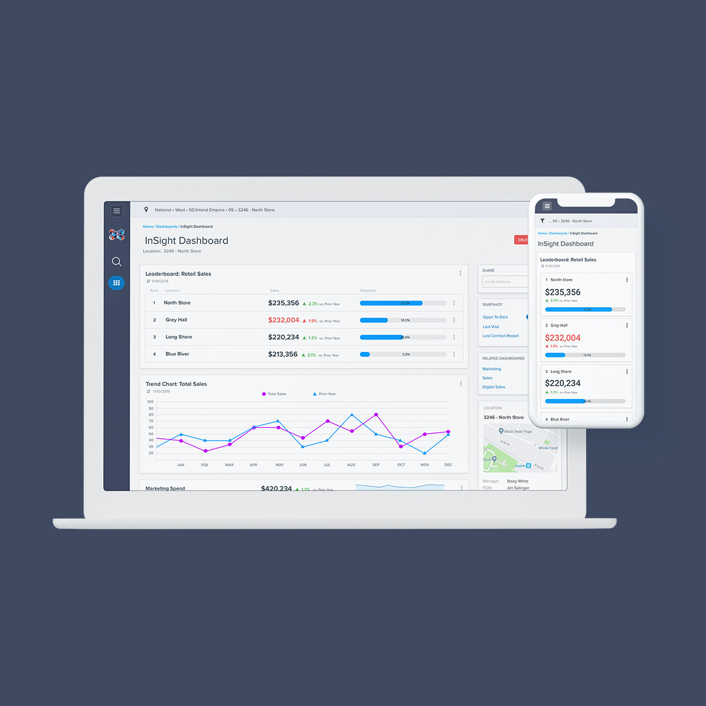
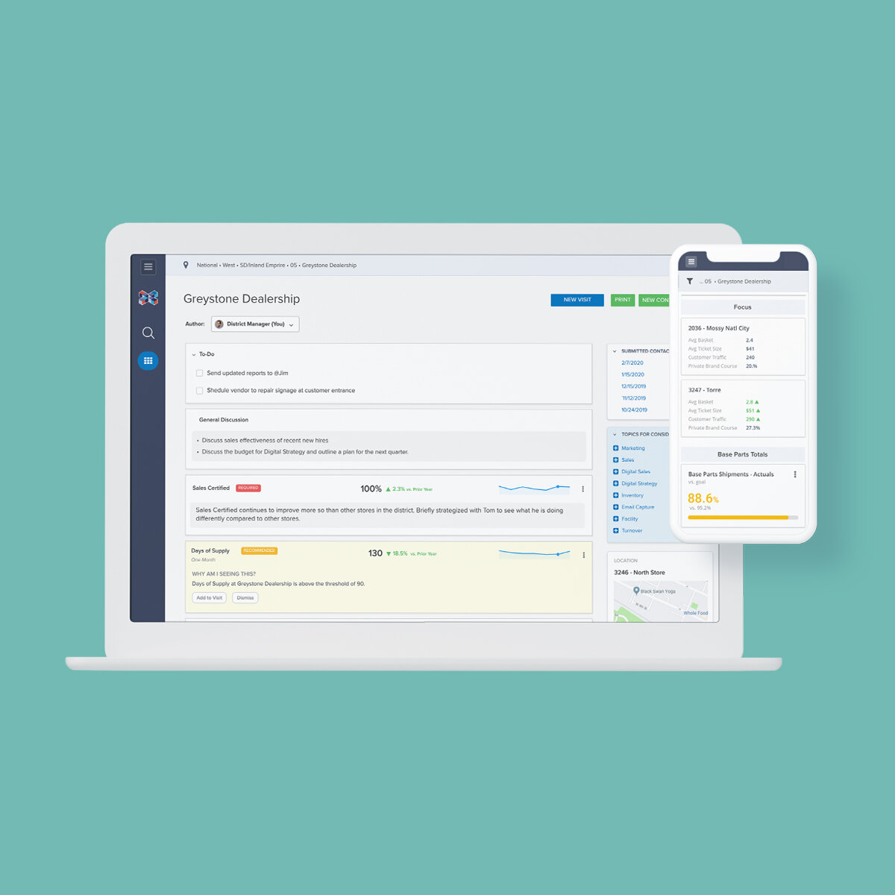
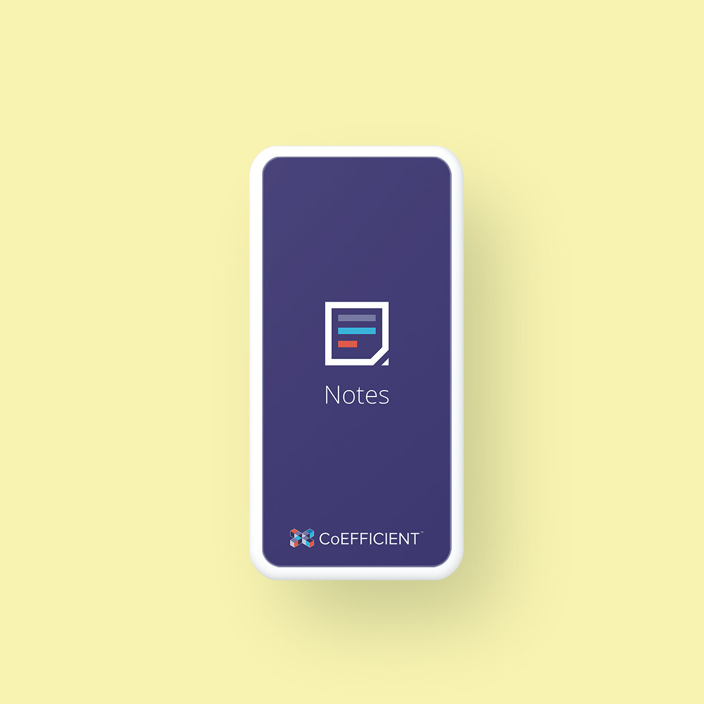

Hi, I'm Ryan.
Currently, I serve as the Lead Product Designer at Osano, where I focus on making the complex world of data privacy simple and accessible for thousands of companies.
EXPERIENCE:
- Proven Startup Value Creator: 15+ years of experience with a unique track record as the founding designer for two B2B SaaS startups both of which achieved successful exits.
- Strategic Design Leader: Experienced in managing and mentoring design teams, scaling design culture from early-stage environments to established enterprise organizations.
- End-to-End Product Ownership: Expert at partnering with Product and Engineering to take raw concepts to fully-realized software.
- Systems-Level Thinking: Deeply proficient in Figma, specializing in building and maintaining comprehensive Design Systems that streamline development and ensure brand consistency at scale.
- Technical & AI-Forward: A designer who can code and navigate emerging technologies like AI to build smarter, more interactive user experiences (a skill set rooted in early work with interactive Flash technologies).
- Brand & Marketing Foundation: Background in traditional graphic design for national brands like Bowflex, Merck, and Novartis, bringing a sophisticated eye for branding, typography, and visual storytelling to the UX world.
Osano
A leading data privacy platform that helps companies navigate the difficult task of staying compliant within an ever-changing landscape of global privacy regulations.

Key Milestones:
- AI Classifications of Cookies and Scripts - Reduce time-to-value for new users by automating the categorization of cookies and scripts—a process that was typically a tedious and time-consuming manual task.
- AI Driven Compliance Monitor - Monitor a customer's domain for privacy gaps to ensure they stay compliant in a constantly changing legal landscape. Customers can now be more "hands-off," reducing stress by acting on specific requirements only when a check fails.
- AI Intake and Automation of Data Subject Access Requests - Save users time when processing DSAR requests by auto-rejecting duplicates, managing rights based on jurisdiction, and automating common tasks (e.g., Delete and Summarize) through seamless integrations.
Square Root
Before joining Osano, I spent a decade leading the design team at Square Root*. I had the pleasure of managing a talented design team as we built CoEFFICIENT, a first-of-its-kind platform for (automotive) field teams.
*Square Root was acquired by CDK Global in 2021 and CoEFFICIENT was rebranded as Neuron.

CoEFFICIENT Metrics
A machine-learning dashboard, gave users clear, actionable dashboards that helped field teams make better business decisions. These powerful custom insights led CDK Global to acquire Square Root and rebrand the platform as Neuron for their product suite.
VIEW PROJECT
CoEFFICIENT Visits
Combine corporate driven nationwide initiatives with machine-learning metrics and unique store history, and you create an application that helps managers in the field have conversations that count with their store leadership.
VIEW PROJECT
CoEFFICIENT Mobile
Corporate users are often at their desktops, but since a lot of our users where in the field, often on weak connections, we developed (and concepted) a series of native iOS applications to meet the needs of field teams.
VIEW PROJECTROIKOI
While at Square Root, I partnered with a former Square Root Product Manager to form ROIKOI, a company that allows recruiting teams to effectively leverage their employees' networks with powerful talent mapping software, to make hiring easier.
*ROIKOI was acquired by Terminal in 2020.
ROIKOI Referral Platform
Hiring is hard and expensive. ROIKOI was built on the fact that referrals often make better hires. ROIKOI recognized that hiring goes beyond trying to find people to the work, but also making sure you're hiring a person that people want to work with.
LEARN MOREDesign Principles
- Progress Over Perfection - Solve problems and ease user pain points by choosing the path of least resistance. Aim for the simplest solution first, and always provide good, better, and best options for every design.
- Stay Curious - Great ideas aren't born in silos—they come from everywhere. Learn from your teammates, experiment with unfamiliar software, and stay playful. You never know which random spark will ignite your next big idea.
- The 2% Rule - Leave everything better than you found it. Whether it's a file, a flow, or a single component, aim to make it at least 2% better every time you touch it.
- Radical Simplicity - Simplicity applies to more than just the UI. Break complex problems down until they are relatable and easy to understand. When a solution is simple, it's much easier to get everyone on board.